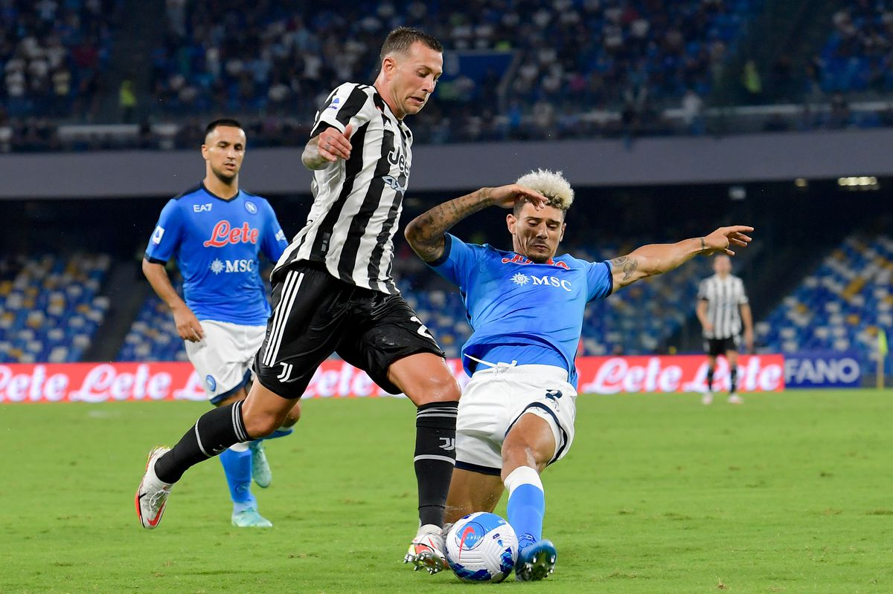
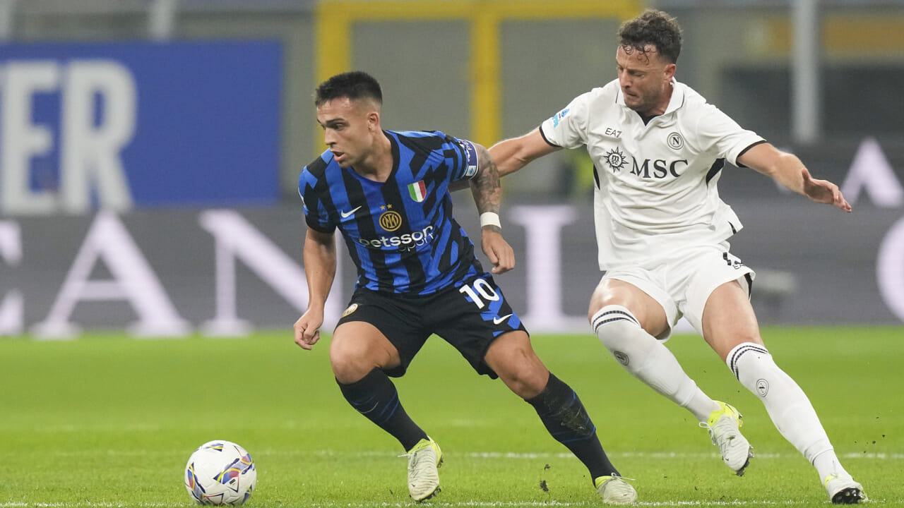
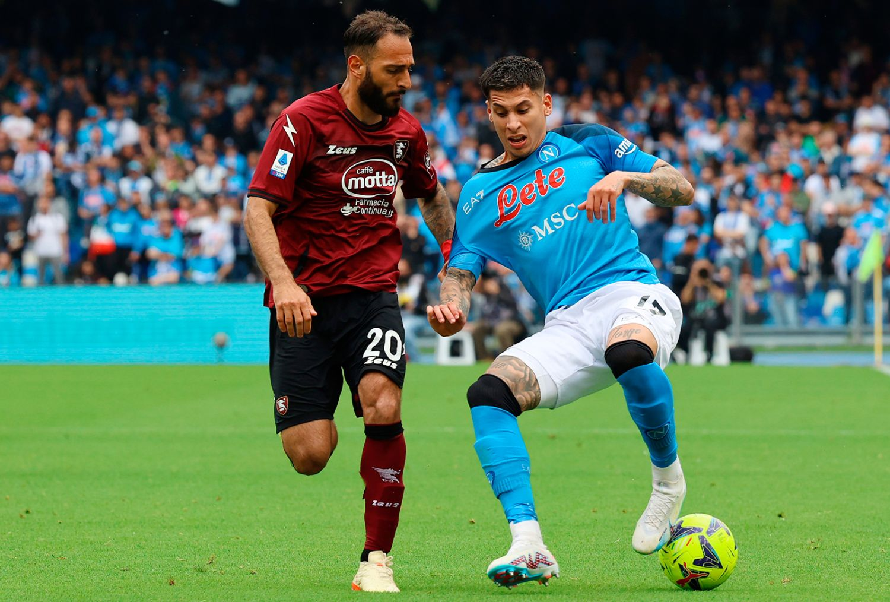
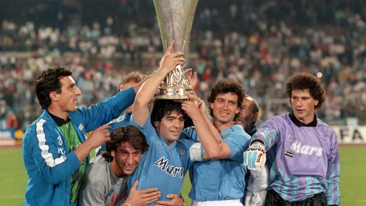
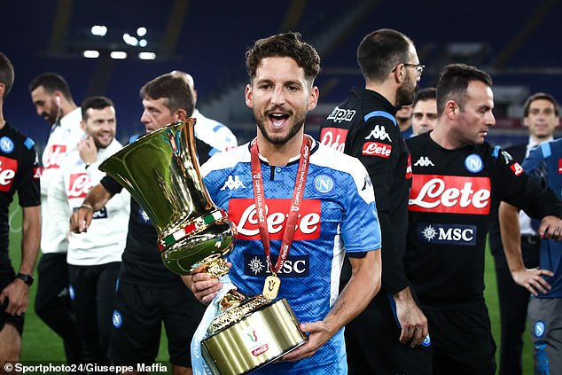
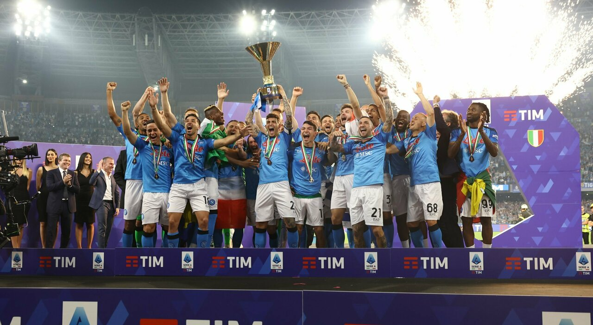

This is Napoli's current manager, Antonio Conte. He's leading Napoli to success in his first season!

Luciano Spalletti was the coach who led Napoli to a league title in the 2022-23 season!

Gennaro Gattuso helped Napoli win the Coppa Italia in the 2019-2020 season. He's currently coaching in France.

GK - Alex Meret

RB - Captain - Giovanni Di Lorenzo

CB - Amir Rrhamani

CB - Alessandro Buongiorno

LB - Leonardo Spinazzola

CDM - Frank-Zambo Anguissa

CDM - Stanislav Lobotka

CM - Scott McTominay

LW - David Neres

RW - Matteo Politano

ST - Romelu Lukaku

SSC Napoli VS. Juventus
Napoli's biggest rivals, with a heated history of fierce clashes.

SSC Napoli VS. Inter Milan
Intense battles with Inter for league titles and glory!

SSC Napoli VS. Salernitana
Napoli's neighbors and automatic rivals in every match!

First European Trophy - Europa League (1989-1990)

Most Recent Coppa Italia Win (2019-2020)
